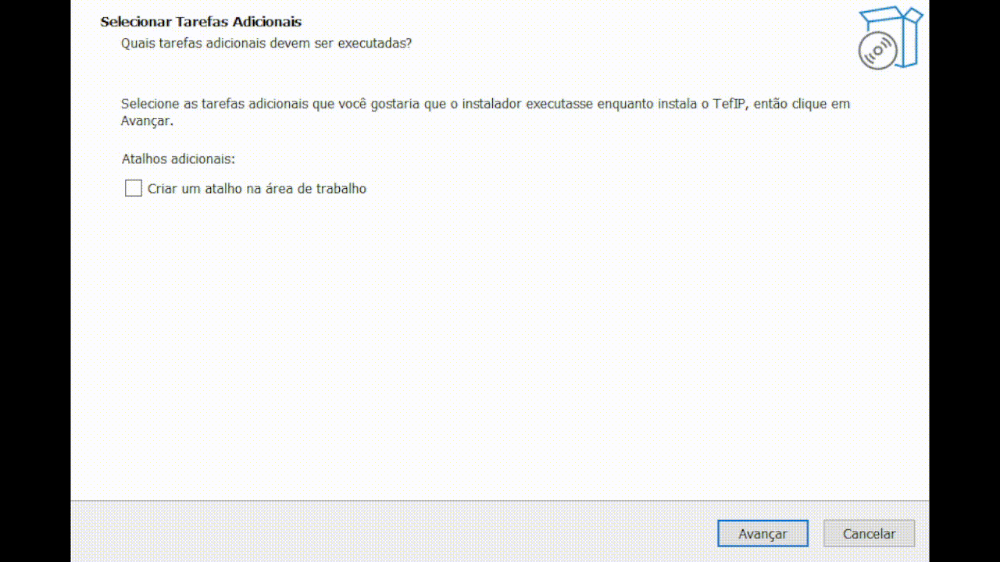

Emulador
O TEF IP inclui um modo emulador que simula o hardware do adquirente localmente — sem precisar de nenhum terminal físico. É a forma mais rápida de desenvolver e testar toda a integração com o TEF IP.
Não usar em produção
O build com emulador é destinado exclusivamente a desenvolvimento e testes. Para uso em produção, utilize o app distribuído pelo seu adquirente no terminal Android correspondente (Stone, Getnet ou Rede).
Veja abaixo um pagamento sendo processado no emulador:
Download
Escolha a plataforma para desenvolvimento e testes:
| Plataforma | Arquivo | Observação |
|---|---|---|
| Windows 10+ | TEF IP-emulador-setup.exe |
Instalador com assistente; registra o TEF IP como serviço do Windows |
| Android (APK) | TEF IP-emulador.apk |
Sideload manual; não disponível na Play Store |
Onde baixar
Os arquivos de download são disponibilizados pelo canal TEF IP. Entre em contato com o suporte para obter o link de download da versão mais recente.
Instalação no Windows
- Execute o instalador
TEF IP-emulador-setup.exe. - Siga o assistente de instalação (próximo → próximo → instalar).
- Ao final, o TEF IP é registrado como serviço do Windows e inicia automaticamente com o sistema.
- Um ícone aparecerá na bandeja do sistema — clique nele para abrir o painel de controle.

Instalação do APK Android
- No dispositivo Android, acesse Configurações → Segurança e habilite "Fontes desconhecidas" (ou "Instalar apps desconhecidos").
- Transfira o arquivo
TEF IP-emulador.apkpara o dispositivo (via USB, e-mail ou link direto). - Toque no arquivo
.apkpara iniciar a instalação e confirme. - Abra o app TEF IP após a instalação.
Dispositivo de testes
Qualquer smartphone ou tablet Android com Android 8.0+ funciona para desenvolvimento. Não é necessário nenhum hardware de adquirente.
Próximos passos
- Primeiros Passos — configure o servidor e faça a primeira requisição
- Referência da API: Transações — processe pagamentos e estornos
- Referência da API: Status — monitore e reinicie o servidor remotamente
Dica de validação rápida
Depois da instalação, valide o emulador com GET /status em
http://localhost:9050/status usando Basic Auth. Se precisar investigar comportamento
interno, consulte também Logs.